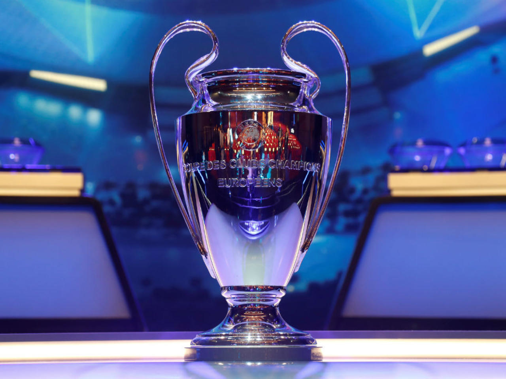

La Liga de Campeones de la UEFA(en inglés y oficialmente: UEFA Champions League), originariamente conocida como Copa de Europa, es el torneo internacional oficial de fútbol más prestigioso a nivel de clubes entre los organizados por la Unión de Asociaciones Europeas de Fútbol (UEFA).Asimismo, es el acontecimiento deportivo anual más seguido en el mundo, con más de 350 millones de espectadores en 2018.
Disputada anualmente, fue creada por iniciativa del diario L'Équipe en la temporada 1955-56 bajo la denominación de Copa de Clubes Campeones Europeos(nombre original en francés, Coupe des Clubs Champions Européens), con un formato de eliminación directa. Ideada para definir al mejor club del continente, en 1992 el torneo fue reestructurado incluyendo por primera vez un formato de competición de liga o fase de grupos como paso previo a la fase eliminatoria, por lo que fue rebautizado con su vigente denominación para la edición 1992-93, consolidando dicho formato. Originalmente, se clasificaban para su participación en el certamen los equipos campeones de las ligas nacionales, pero, en 1997, comenzaron a participar también los subcampeones y, en 1999, los clasificados hasta el cuarto puesto, dependiendo del coeficiente UEFA de cada liga, debiendo superar los de menor coeficiente una fase previa.

El ganador de esta competición disputa la Supercopa de Europa contra el campeón de la Liga Europa y, como representante de la confederación, la Copa Mundial de Clubes de la FIFA. El vigente campeón es el Bayern de Múnich quien ganó su sexto título tras vencer al París Saint-Germain Football Club situándose como el tercer club más laureado entre los 524 participantes históricos de la competición, clasificación que lidera el Real Madrid Club de Fútbol con trece títulos. La federación española es la que más campeonatos ha logrado con dieciocho, seguida por la inglesa con trece y la italiana con doce.
Sitema De Competicion
Participantes y formato
Desde la temporada 1999-2000 participan 32 equipos en la competición, que se organizan en una primera ronda que se juega en forma de liguilla. Hay ocho grupos con cuatro equipos en cada grupo (por regla de la UEFA, no puede haber dos equipos de un mismo país en un solo grupo). Los equipos de los grupos se enfrentan entre sí a ida y vuelta y los dos primeros clasificados pasan a la siguiente ronda, los octavos de final; el tercero de cada grupo pasará a los dieciseisavos de la Liga Europa de la UEFA.
En el sorteo de la primera ronda, además se establecen los calendarios de la misma de modo que dos equipos de un mismo país no jueguen ambos en casa o ambos fuera en la misma jornada (o en caso de que un país tuviera tres o cuatro equipos, para que dos equipos de ese mismo país no jugasen ambos en casa o fuera el mismo día, si se tiene en cuenta que cada jornada se disputa entre el martes y el miércoles de una misma semana). Tampoco se permite que se disputen partidos de Liga de Campeones de la UEFA a la vez en campos situados a menos de 200 km de distancia. Esta norma tiene una excepción referente a los equipos rusos (negociada por la extinta Unión Soviética y que se mantiene en la actualidad), por la que, debido las bajas temperaturas que registra este país en invierno se establece que en la última jornada de la primera ronda no se jueguen partidos allí. Paradójicamente, esta norma no es aplicable a otras repúblicas ex-soviéticas como Ucrania, Estonia o Bielorrusia, entre otras.
Una de las características tradicionales del torneo hasta 2018 fue que todos sus partidos se disputaban en martes o miércoles a las 20:45 horas (hora de Europa central) en simultáneo, con excepción de la final y los países de Europa del Este o Eurasia. A partir de entonces, manteniendo martes y miércoles como fechas de partido, los horarios se dividieron en las 18:55 y las 21:00 horas.
En los octavos de final hay 16 equipos que se enfrentan de forma eliminatoria. Cada equipo se enfrentará con otro a doble partido y el vencedor pasará a cuartos de final, en los que quedarán 8 equipos enfrentándose de nuevo de forma eliminatoria. En las semifinales hay 4 equipos. Habrá dos partidos y el vencedor de cada partido llegará a la final. La final es el único enfrentamiento que se juega a un solo partido y en un campo neutral elegido por la UEFA antes del inicio de la competición.
Tabla De Goleadores
El máximo goleador del torneo es el portugués Cristiano Ronaldo con 132 goles,136137 seguido del argentino Lionel Messi con 118 goles y el español Raúl González Blanco con 71 goles respectivamente, siendo además los únicos jugadores en sobrepasar la barrera de los setenta goles en la historia de la competición.
Además cabe destacar entre los máximos anotadores al alemán Gerd Müller por ser el jugador con mejor promedio anotador de la competición con 0.97 goles por partido, por delante de Ferenc Puskás y Alfredo Di Stéfano con un promedio de 0.85 y 0.84 respectivamente, sumando 9 distinciones de máximo anotador entre ellos, cuatro para el alemán, tres para el hispano-argentino y dos para el hispano-húngaro.
Divididos por rondas, el máximo anotador en fases clasificatorias previas es Andriy Shevchenko con 11 goles. En fase de grupos es Messi con 71 tantos, en fases finales eliminatorias —a partir de los octavos de final— Cristiano Ronaldo suma 65 goles, a partir de cuartos de final, Cristiano Ronaldo acumula 42,mientras que a partir de semifinales es Di Stéfano con 18 quien lidera el registro, por delante de los 17 de Cristiano Ronaldo y los 14 de Ferenc Puskás, En las finales dominan Di Stéfano y Puskás con siete cada uno.
Los anteriores registros contabilizan las fases previas clasificatorias. En cuanto a partidos en la fase final del torneo el citado Cristiano Ronaldo es quien acumula más goles, con 131, seguidos por los 118 y 71 de Lionel Messi y Raúl González.
Para mas informacion clic aqui!